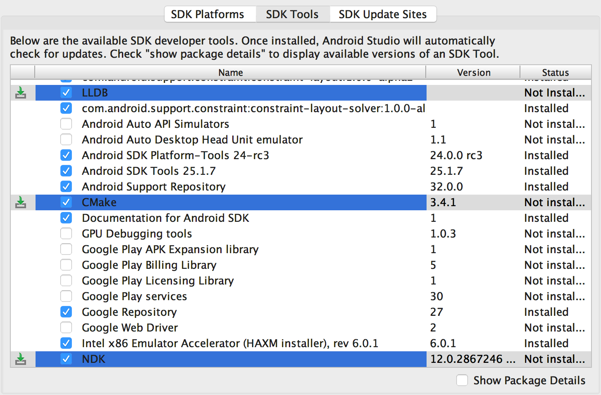
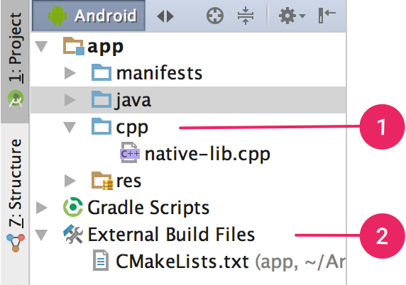
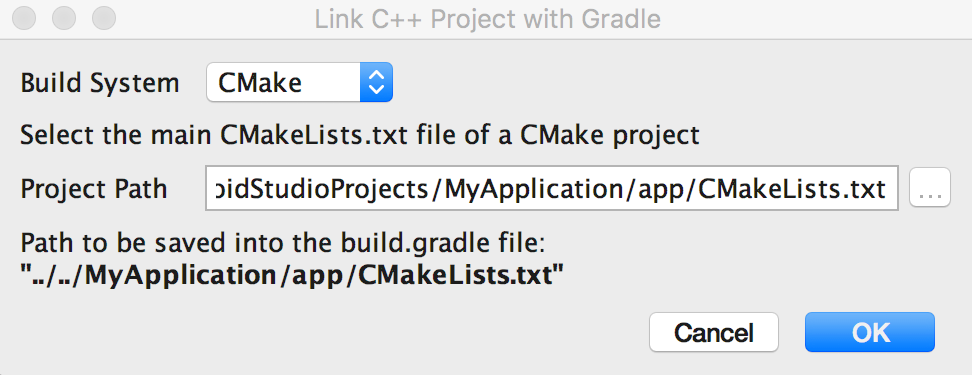

android ndk 开发
Using Android Studio 2.2 and higher, you can use the NDK to compile C and C++ code into a native library and package it into your APK using Gradle.
Java code can then call functions in your native library through the Java Native Interface (JNI) framework.
Android Studio’s default build tool to compile native libraries is CMake. Android Studio also supports ndk-build due to the large number of existing projects that use the build toolkit.
下载 NDK & tools
- 要下载的组件
- The Android Native Development Kit (NDK): a set of tools that allows you to use C and C++ code with Android.
- CMake: an external build tool that works alongside Gradle to build your native library. You do not need this component if you only plan to use ndk-build.
- LLDB: the debugger Android Studio uses to debug native code.
- 下载步骤
- From an open project, select Tools > Android > SDK Manager from the main menu.
- Click the SDK Tools tab.
- Check the boxes next to LLDB, CMake, and NDK, as shown in figure 1.
- Click Apply, and then click OK in the next dialog.
- When the installation is complete, click Finish, and then click OK.

Add C and C++ Code to Your Project
You can add C and C++ code to your Android project by placing the code into a cpp directory in your project module.
Create a New Project with C/C++ Support
- 创建项目的向导页，选中
Include C++ Supportcheckbox. - Click Next.
- 与不包含Natvie 代码的项目一样，配置，点几个下一步，一直到 “Customize C++ Support” 页面
- “Customize C++ Support” 页面的配置选项:
C++ Standard: use the drop-down list to select which standardization of C++ you want to use. Selecting Toolchain Default uses the default CMake setting.Exceptions Support: check this box if you want to enable support for C++ exception handling. If enabled, Android Studio adds the -fexceptions flag to cppFlags in your module-level build.gradle file, which Gradle passes to CMake.Runtime Type Information Support: check this box if you want support for RTTI. If enabled, Android Studio adds the -frtti flag to cppFlags in your module-level build.gradle file, which Gradle passes to CMake.
- Click Finish.
- 完成效果：
- Android Studio creates a sample C++ source file,
native-lib.cpp, and places it in thesrc/main/cpp/directory of your app module. - The External Build Files group 存放 build scripts for CMake or ndk-build. 新建项目时，Android Studio 默认创建一个 a CMake build script,
CMakeLists.txt, 放在app根目录.
- Android Studio creates a sample C++ source file,
add native code to an existing project
- 如无
cpp/目录，创建之。创建目录app/src/main/cpp - Right-click on the cpp/ directory and select New > C/C++ Source File.
- Enter a name for your source file, such as native-lib.
- From the Type drop-down menu, select the file extension for your source file, such as .cpp.
- If you also want to create a header file, check the Create an associated header checkbox.
- Click OK.
添加了 C/C++ 源码，还要 配置下CMake，将新代码加到 native library。
从 ndkCompile 迁移到 ndk-build
- Compile your project with ndkCompile at least once by selecting
Build > Make Project. This generates theAndroid.mkfile for you. - Locate the auto-generated
Android.mkfile by navigating to project-root/module-root/build/intermediates/ndk/debug/Android.mk. - Relocate the
Android.mkfile to some other directory, such as the same directory as your module-level build.gradle file. This makes sure that Gradle doesn’t delete the script file when running the clean task. - Open the
Android.mkfile and edit any paths in the script such that they are relative to the current location of the script file. - Link Gradle to the Android.mk file .
- Disable ndkCompile by opening the
build.propertiesfile and removing the following line:1 2
// Remove this line android.useDeprecatedNdk = true
- Apply your changes by clicking Sync Project in the toolbar.
配置CMake
A CMake build script is a plain text file that you must name CMakeLists.txt and includes commands CMake uses to build your C/C++ libraries. 如果项目没有这个文件，却包含C/C++代码，要手动创建CMakeLists.txt。
创建 CMakeLists.txt
- Open the Project pane from the left side of the IDE and select the Project view from the drop-down menu.
- Right-click on the root directory of your-module and select ·New > File·.
- Enter “CMakeLists.txt” as the filename and click OK.
- 编辑 “CMakeLists.txt”
- 添加 cmake_minimum_required() and add_library()
1 2 3 4 5 6 7 8 9 10 11 12 13 14 15 16 17 18 19 20
# Sets the minimum version of CMake required to build your native library. # This ensures that a certain set of CMake features is available to # your build. cmake_minimum_required(VERSION 3.4.1) # Specifies a library name, specifies whether the library is STATIC or # SHARED, and provides relative paths to the source code. You can # define multiple libraries by adding multiple add_library() commands, # and CMake builds them for you. When you build your app, Gradle # automatically packages shared libraries with your APK. add_library( # Specifies the name of the library. native-lib # Sets the library as a shared library. SHARED # Provides a relative path to your source file(s). src/main/cpp/native-lib.cpp )
- Android Studio also shows associated header files in the Project view after you sync your project. 为使 CMake 在编译时找到头文件，使用
include_directories()命令指定 headers 路径:
1 2 3 4
add_library(...) # Specifies a path to native header files. include_directories(src/main/cpp/include/)
Add NDK APIs
The Android NDK provides a set of native APIs and libraries that you may find useful. You can use any of these APIs by including the NDK libraries in your project’s CMakeLists.txt script file.
Prebuilt NDK libraries already exist on the Android platform, so you don’t need to build them or package them into your APK. you only need to provide CMake with the name of the library you want to use and link it against your own native library.
Add the find_library() command to your CMake build script to locate an NDK library and store its path as a variable.
The following sample locates the Android-specific log support library and stores its path in log-lib:
1 2 3 4 5 6 7 | find_library( # Defines the name of the path variable that stores the
# location of the NDK library.
log-lib
# Specifies the name of the NDK library that
# CMake needs to locate.
log )
|
In order for your native library to call functions in the log library, you need to link the libraries using the target_link_libraries() command in your CMake build script:
1 2 3 4 5 6 7 8 | find_library(...) # Links your native library against one or more other native libraries. target_link_libraries( # Specifies the target library. native-lib # Links the log library to the target library. ${log-lib} ) |
The NDK also includes some libraries as source code that you need to build and link to your native library.
You can compile the source code into a native library by using the add_library() command in your CMake build script. To provide a path to your local NDK library, you can use the ANDROID_NDK path variable, which Android Studio automatically defines for you.
The following command tells CMake to build android_native_app_glue.c, which manages NativeActivity lifecycle events and touch input, into a static library and links it to native-lib:
1 2 3 4 5 6 | add_library( app-glue STATIC ${ANDROID_NDK}/sources/android/native_app_glue/android_native_app_glue.c ) # You need to link static libraries against your shared native library. target_link_libraries( native-lib app-glue ${log-lib} ) |
Add other prebuilt libraries
Adding a prebuilt library is similar to specifying another native library for CMake to build. However, because the library is already built, you need to use the IMPORTED flag to tell CMake that you only want to import the library into your project:
1 2 3 | add_library( imported-lib SHARED IMPORTED ) |
You then need to specify the path to the library using the set_target_properties() command as shown below.
Some libraries provide separate packages for specific CPU architectures, or Application Binary Interfaces (ABI), and organize them into separate directories. This approach helps libraries take advantage of certain CPU architectures while allowing you to use only the versions of the library you want. To add multiple ABI versions of a library to your CMake build script, without having to write multiple commands for each version of the library, you can use the ANDROID_ABI path variable. This variable uses a list of the default ABIs that the NDK supports, or a filtered list of ABIs you manually configure Gradle to use. For example:
1 2 3 4 5 6 7 8 9 | add_library(...) set_target_properties( # Specifies the target library. imported-lib # Specifies the parameter you want to define. PROPERTIES IMPORTED_LOCATION # Provides the path to the library you want to import. imported-lib/src/${ANDROID_ABI}/libimported-lib.so ) |
For CMake to locate your header files during compile time, you need to use the include_directories() command and include the path to your header files:
1 | include_directories( imported-lib/include/ ) |
To link the prebuilt library to your own native library, add it to the target_link_libraries() command in your CMake build script:
1 | target_link_libraries( native-lib imported-lib app-glue ${log-lib} ) |
To package the prebuilt library into your APK, you need to manually configure Gradle with the sourceSets block to include the path to your .so file. After building your APK, you can verify which libraries Gradle packages into your APK by using the APK Analyzer.
Include other CMake projects
If you want to build multiple CMake projects and include their outputs in your Android project, you can use one CMakeLists.txt file as the top-level CMake build script (which is the one you link to Gradle) and add additional CMake projects as dependencies of that build script. The following top-level CMake build script uses the add_subdirectory() command to specify another CMakeLists.txt file as a build dependency and then links against its output just as it would with any other prebuilt library.
1 2 3 4 5 6 7 8 9 10 11 12 13 14 15 16 17 18 19 20 21 22 23 24 | # Sets lib_src_DIR to the path of the target CMake project. set( lib_src_DIR ../gmath ) # Sets lib_build_DIR to the path of the desired output directory. set( lib_build_DIR ../gmath/outputs ) file(MAKE_DIRECTORY ${lib_build_DIR}) # Adds the CMakeLists.txt file located in the specified directory # as a build dependency. add_subdirectory( # Specifies the directory of the CMakeLists.txt file. ${lib_src_DIR} # Specifies the directory for the build outputs. ${lib_build_DIR} ) # Adds the output of the additional CMake build as a prebuilt static # library and names it lib_gmath. add_library( lib_gmath STATIC IMPORTED ) set_target_properties( lib_gmath PROPERTIES IMPORTED_LOCATION ${lib_build_DIR}/${ANDROID_ABI}/lib_gmath.a ) include_directories( ${lib_src_DIR}/include ) # Links the top-level CMake build output against lib_gmath. target_link_libraries( native-lib ... lib_gmath ) |
.so 文件名约定
The convention CMake uses to name the file of your library is as follows:
liblibrary-name.so
For example, if you specify “native-lib” as the name of your shared library in the build script, CMake creates a file named libnative-lib.so. However, when loading this library in your Java or Kotlin code, use the name you specified in the CMake build script:
1 2 3 | static {
System.loadLibrary("native-lib");
}
|
Link Gradle to Your Native Library
To include your native library project as a Gradle build dependency, you need to provide Gradle with the path to your CMake or ndk-build script file.
Note: When making changes to the Gradle configuration, make sure to apply your changes by clicking Sync Project in the toolbar.
when making changes to your CMake or ndk-build script file after you have already linked it to Gradle, you should sync Android Studio with your changes by selectingBuild > Refresh Linked C++ Projectsfrom the menu bar.
在 Android Studio UI 中配置
You can link Gradle to an external CMake or ndk-build project using the Android Studio UI:
- Open the Project pane from the left side of the IDE and select the Android view.
- Right-click on the module you would like to link to your native library, such as the app module, and select Link C++ Project with Gradle from the menu.
- From the drop-down menu, select either CMake or ndk-build.
- If you select CMake, Project Path 填 CMakeLists.txt script file for your external CMake project.
- If you select ndk-build, Project Path 填 Android.mk script file for your external ndk-build project. Android Studio also includes the Application.mk file if it is located in the same directory as your Android.mk file.

手动配置
add the externalNativeBuild block to your module-level build.gradle file and configure it with either the cmake or ndkBuild block:
1 2 3 4 5 6 7 8 9 10 11 12 13 14 15 16 | android { ... defaultConfig {...} buildTypes {...} // Encapsulates your external native build configurations. externalNativeBuild { // Encapsulates your CMake build configurations. cmake { // Provides a relative path to your CMake build script. path "CMakeLists.txt" } } } |
Note: If you want to link Gradle to an existing ndk-build project, use the ndkBuild block instead of the cmake block, and provide a relative path to your Android.mk file. Gradle also includes the Application.mk file if it is located in the same directory as your Android.mk file.
Specify optional configurations
specify optional arguments and flags for CMake or ndk-build by configuring another externalNativeBuild block within the defaultConfig block of your module-level build.gradle file. Similar to other properties in the defaultConfig block, you can override these properties for each product flavor in your build configuration.
if your CMake or ndk-build project defines multiple native libraries and executables, you can use the targets property to build and package only a subset of those artifacts for a given product flavor. The following code sample describes some of the properties you can configure:
1 2 3 4 5 6 7 8 9 10 11 12 13 14 15 16 17 18 19 20 21 22 23 24 25 26 27 28 29 30 31 32 33 34 35 36 37 38 39 40 41 42 43 44 45 46 47 48 49 50 51 52 53 54 55 56 57 58 59 60 61 62 63 64 65 66 67 | android { ... defaultConfig { ... // This block is different from the one you use to link Gradle // to your CMake or ndk-build script. externalNativeBuild { // For ndk-build, instead use the ndkBuild block. cmake { // Passes optional arguments to CMake. arguments "-DANDROID_ARM_NEON=TRUE", "-DANDROID_TOOLCHAIN=clang" // Sets a flag to enable format macro constants for the C compiler. cFlags "-D__STDC_FORMAT_MACROS" // Sets optional flags for the C++ compiler. cppFlags "-fexceptions", "-frtti" } } } buildTypes {...} productFlavors { ... demo { ... externalNativeBuild { cmake { ... // Specifies which native libraries or executables to build and package // for this product flavor. The following tells Gradle to build only the // "native-lib-demo" and "my-executible-demo" outputs from the linked // CMake project. If you don't configure this property, Gradle builds all // executables and shared object libraries that you define in your CMake // (or ndk-build) project. However, by default, Gradle packages only the // shared libraries in your APK. targets "native-lib-demo", // You need to specify this executable and its sources in your CMakeLists.txt // using the add_executable() command. However, building executables from your // native sources is optional, and building native libraries to package into // your APK satisfies most project requirements. "my-executible-demo" } } } paid { ... externalNativeBuild { cmake { ... targets "native-lib-paid", "my-executible-paid" } } } } // Use this block to link Gradle to your CMake or ndk-build script. externalNativeBuild { cmake {...} // or ndkBuild {...} } } |
To learn more about configuring product flavors and build variants, go to Configure Build Variants. For a list of variables you can configure for CMake with the arguments property, see Using CMake Variables.
Include prebuilt native libraries
If you want Gradle to package prebuilt native libraries with your APK, modify the default source set configuration to include the directory of your prebuilt .so files, as shown below. Keep in mind, you don’t need to do this to include artifacts of CMake build scripts that you link to Gradle.
1 2 3 4 5 6 7 8 | android { ... sourceSets { main { jniLibs.srcDirs 'imported-lib/src/', 'more-imported-libs/src/' } } } |
Specify ABIs
By default, Gradle builds your native library into separate .so files for the ABIs the NDK supports and packages them all into your APK. If you want Gradle to build and package only certain ABI configurations of your native libraries, you can specify them with the ndk.abiFilters flag in your module-level build.gradle file, as shown below:
1 2 3 4 5 6 7 8 9 10 11 12 13 14 15 16 17 18 19 20 21 22 | android { ... defaultConfig { ... externalNativeBuild { cmake {...} // or ndkBuild {...} } // Similar to other properties in the defaultConfig block, // you can configure the ndk block for each product flavor // in your build configuration. ndk { // Specifies the ABI configurations of your native // libraries Gradle should build and package with your APK. abiFilters 'x86', 'x86_64', 'armeabi', 'armeabi-v7a', 'arm64-v8a' } } buildTypes {...} externalNativeBuild {...} } |
In most cases, you only need to specify abiFilters in the ndk block, as shown above, because it tells Gradle to both build and package those versions of your native libraries. However, if you want to control what Gradle should build, independently of what you want it to package into your APK, configure another abiFilters flag in the defaultConfig.externalNativeBuild.cmake block (or defaultConfig.externalNativeBuild.ndkBuild block). Gradle builds those ABI configurations but only packages the ones you specify in the defaultConfig.ndk block.
To further reduce the size of your APK, consider configuring multiple APKs based on ABI—instead of creating one large APK with the all versions of your native libraries, Gradle creates a separate APK for each ABI you want to support and only packages the files each ABI needs. If you configure multiple APKs per ABI without specifying the abiFilters flag as shown in the code sample above, Gradle builds all supported ABI versions of your native libraries, but only packages those you specify in your multiple APK configuration. To avoid building versions of your native libraries that you don’t want, provide the same list of ABIs for both the abiFilters flag and your per-ABI multiple APK configuration.